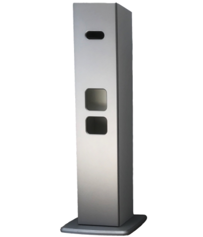

Sanitizing Station Piece of furniture for office and shops, can
contain sanitizing products, made in Italy
About this item
- Touch free hand sanitizer dispenser stand, Simple and easy to
operate, hand sanitizer can be obtained without manual pressing.
- Sanitizer station stand made of high-quality stainless steel,
durable and easy to clean, simple and elegant.
- Soap dispenser
stand adjustable height range from 39 to 64 inches, suitable for
most adults and children, the base diameter of 13 inches is more
stable.
- Easy to install, with column and floor solid base, more
stable without shaking, equipped with mounting screws.
- Touch
free, safe and hygienic, suitable for shopping malls, schools,
restaurants, hospitals, companies and other public places